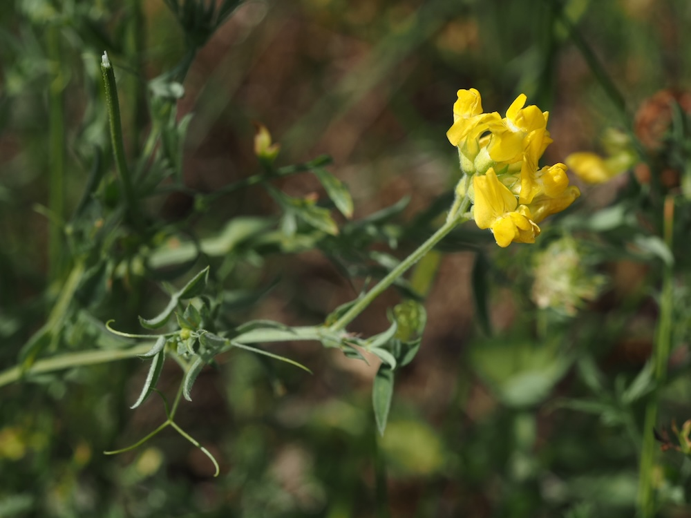
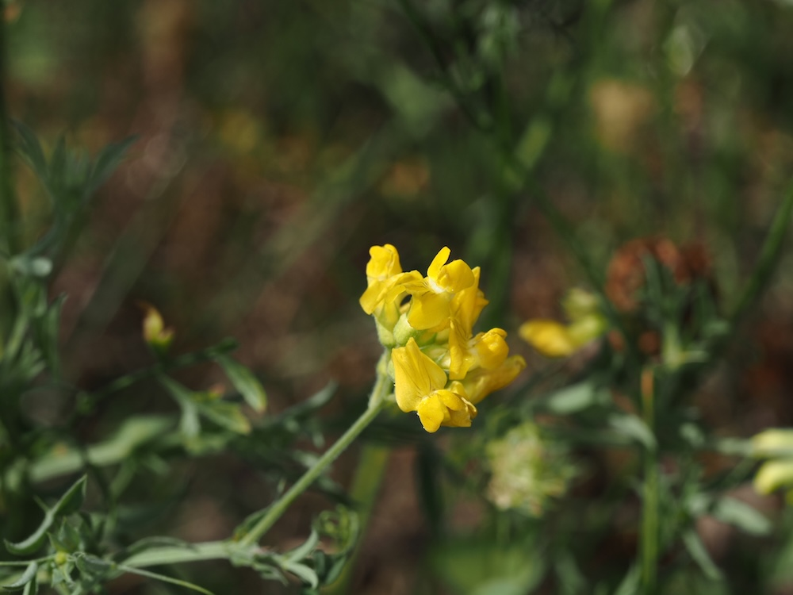

Gelbe Schmetterlinge zwischen Wiesengräsern — und ein Stickstoff-Lieferant.



Der Klee-Verwandte
Wiesen-Platterbse gehört in dieselbe Familie wie der Klee und die Erbse — die Schmetterlingsblütler. Wie alle Verwandten hat sie an den Wurzeln Knöllchen mit Bakterien, die Luftstickstoff binden und in den Boden bringen. Das macht sie zu einer wertvollen Mischwiesen-Pflanze — sie „düngt“ die Wiese kostenlos und macht sie produktiver für andere Arten.
Geflügelter Stängel
Schau mal genau hin: Der Stängel der Wiesen-Platterbse hat seitliche „Flügel“ — schmale, blättrige Streifen, die längs am Stängel verlaufen. Das ist eine seltene Eigenschaft und ein klares Erkennungsmerkmal. Außerdem hat sie nur ein einziges Paar Fiederblätter — sehr ungewöhnlich für die Gattung Lathyrus, die meist mehrere Paare hat.
Wissenswertes & Merksätze
Erkennen leicht gemacht
Kletternder, geflügelter Stängel. Nur ein einziges Paar lanzettlicher Fiederblätter, am Ende eine verzweigte Ranke. Gelbe Schmetterlingsblüten in lockeren Trauben, 1–1,5 cm groß.
Wertvoll für Hummeln
Die langen Blütenröhren können nur von Insekten mit langem Rüssel erreicht werden — vor allem Hummeln. Eine wichtige Nahrungsquelle in der Vor-Sommer-Zeit (Mai/Juni), wenn andere Schmetterlingsblütler noch nicht blühen.